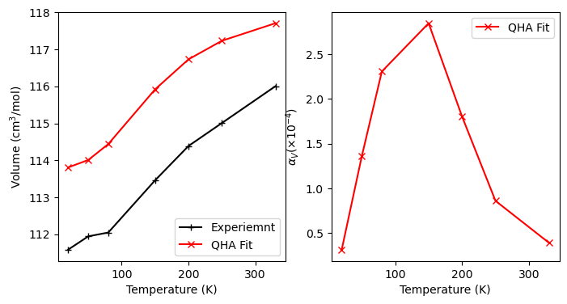
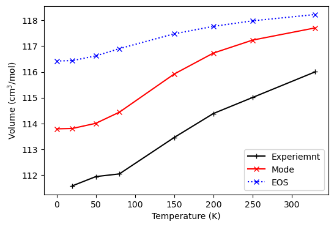
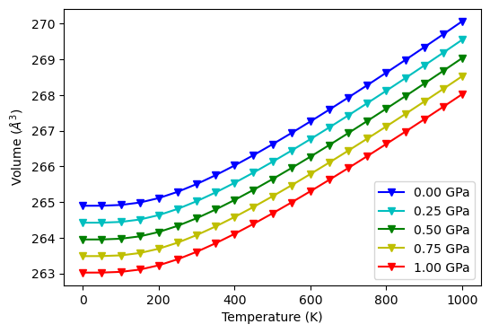
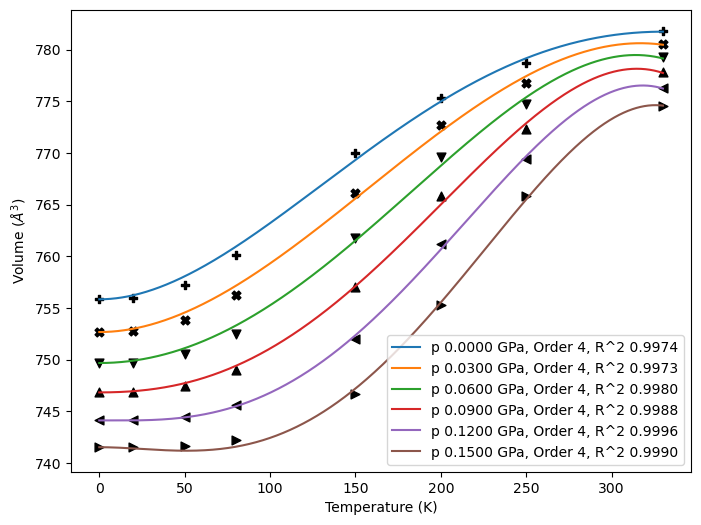
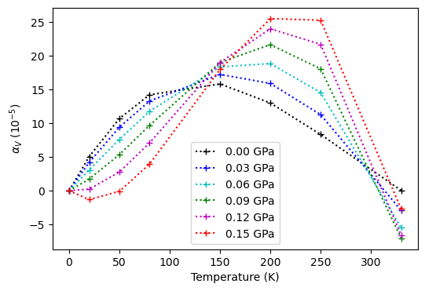
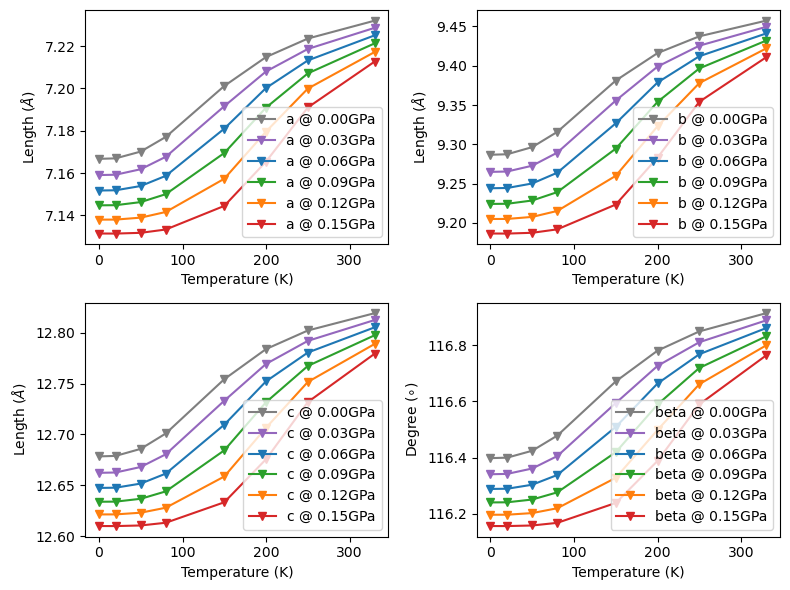
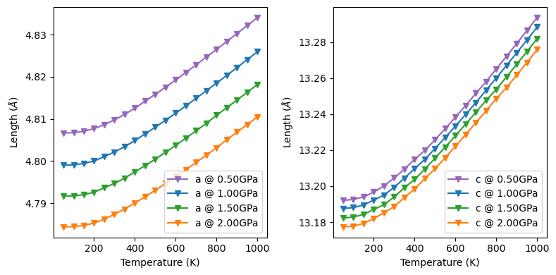
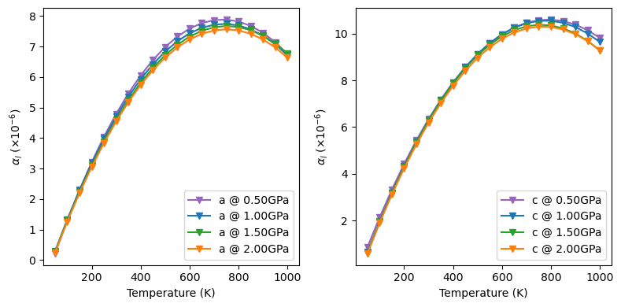
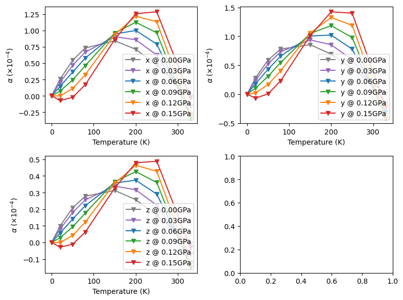
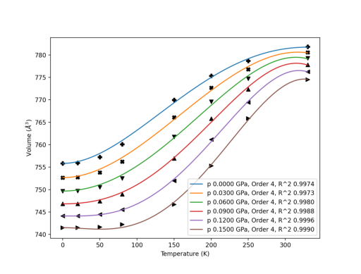

Lattice Dynamics 2: Quasi-Harmonic Approximation
The thermodynamics module is developed for both harmonic approximated (HA) and quasi-harmonic approximated (QHA) lattice dynamics. For simplicity, this part is focused only on QHA phonons. For HA, please refer to the Lattice Dynamics 1: Harmonic Approximation example book in the same catagory. For phonon band and density of states, please refer to the phonons module.
Basic thermodynamic properties
This part is divided into 3 different testing cases to illustrate the available fitting procedures.
The ‘thermo_freq()’ method
The thermo_freq() methods implements the ‘mode-by-mode’ fitting of frequencies.
DFT internal energies are fitted as adiabatic equation of states (EOS) defined in pymatgen.eos module, \(E_{0}(V)\).
Phonon frequencies are sorted by eigenvectors and fitted as polynomial functions of volume, \(\nu(V)\).
The analytical expression of Gibbs free energy is fitted at given temperature and pressure to get the equilibrium volume \(\text{min}\{G(V; T,p)\}\).
Other thermodynamic properties, including Helmholtz free energy \(F\), entropy \(S\), constant volume specific heat \(C_{V}\) and isothermal bulk modulus \(K_{T}\) are obtained.
Mode-specific Grüneisen parameters are obtained by deriving the fitted \(\omega(V; T,p)\).
The macroscopic Grüneisen parameter \(\gamma(T,p)\), volumetric thermal expansion coefficient \(\alpha_{V}\), constant pressure specific heat \(C_{p}\), adiabatic bulk modulus \(K_{S}\) are obtained following the standard Grüneisen method. See the
thermo_gruneisen()method below.
NOTE
\(K_{T}\) requires a refit of \(F(V)\) based on equation of states. At least 5 pressure sampling points are required to ensure a good fitting.
\(\Gamma\) point phonons of Form 1 paracetamols computed at 4 different volumes are fitted and plotted. The sequence of input files is arbitrary.
[1]:
import numpy as np
from CRYSTALpytools.thermodynamics import Quasi_harmonic
file_list = ['qha_paracetamolGm4.out', 'qha_paracetamolGp4.out',
'qha_paracetamolGr0.out', 'qha_paracetamolGp8.out']
T = np.array([20, 50, 80, 150, 200, 250, 330], dtype=float)
p = np.linspace(0, 0.15, 6)
qha = Quasi_harmonic(filename='qha_FreqFit.yaml', temperature=T,
pressure=p).from_file(*file_list, source='crystal')
qha.thermo_freq(eos_method='birch_murnaghan', poly_order=[2, 3],
min_method='BFGS')
/home/huanyu/apps/anaconda3/envs/crystal_py3.9/lib/python3.9/site-packages/CRYSTALpytools/thermodynamics.py:634: UserWarning: Close overlap of phonon modes detected at qpoint 0: 11 overlaps out of 240*240 mode combinations at this point.
close_overlap, dot_pdt = self._combine_data(ha_list, mode_sort_tol=mode_sort_tol)
[1]:
<CRYSTALpytools.thermodynamics.Quasi_harmonic at 0x7fa41753a250>
Warning messages are printed out when the fitted volume data exceeds the sampled volume data at low temperature and high pressure, indicating that fittings there might be unstable.
No warning message is printed out for 0 pressure thermodynamics. The difference is <= 5 cm\(^3\)/mol, which is a good agreement with experimental measurements. The increased thermal expansion around 50~150K is reproduced.
Experimental Data:
C. C. Wilson, Z. Kristallogr. Cryst. Mater., 2000, 215, 693–701
[2]:
import matplotlib.pyplot as plt
exp = np.array([111.5836, 111.9421, 112.0463, 113.4580, 114.3871,
115.0082, 116.0031])
qha_zerop = qha.volume[0, :]
# Angstrom^3 to cm^3/mol
qha_zerop = qha_zerop * 0.602214 / 4
fig, ax = plt.subplots(1, 2, figsize=(8, 4), sharex=True, sharey=False)
ax[0].plot(T, exp, '+-k', label='Experiemnt')
ax[0].plot(T, qha_zerop, 'x-r', label='QHA Fit')
ax[0].legend(loc='lower right')
ax[0].set_xlabel('Temperature (K)')
ax[0].set_ylabel(r'Volume (cm$^{3}$/mol)')
ax[1].plot(T, qha.alpha_v[0, :]*1e4, 'x-r', label='QHA Fit')
ax[1].set_xlabel('Temperature (K)')
ax[1].set_ylabel(r'$\alpha_{V} (\times 10^{-4})$')
ax[1].legend(loc='upper right')
[2]:
<matplotlib.legend.Legend at 0x7fa3bc101340>

The ‘thermo_eos()’ method
This test is to illustrate the procedure to fit a series of adiabatic EOSs at constant temperature to avoid eigenvectors and mode-specific fittings, which might be useful for large systems with low symmetry. But its stability is worse than thermo_eos() and thermo_gruneisen().
Harmonic Helmholtz free energy for each sampled volume is used to fit EOS, \(F(V; T)\).
The difference between analytical pressure \(p(V)=-\left(\frac{\partial F}{\partial V}\right)_{T}\) and the given pressure \(p_{0}\) is minimized to get the equilibrium volume, \(\text{min}\left[p(V) - p_{0}\right]^{2}\).
Other thermodynamic properties, including Gibbs free energy \(G\), constant pressure specific heat \(C_{p}\) (second derivative of \(F\)) and isothermal bulk modulus \(K_{T}\) are obtained.
\(G(T; p)\) is fitted as polynomial function to get entropy, \(S=-\left(\frac{\partial G}{\partial T}\right)_p\).
Since the analytical \(G(V)\) is not available, thermal expansion and other properties are fitted separately, see the following sections.
NOTE
At least 5 temperature sampling points are required to ensure a good fitting of \(G(T; p)\).
The time consumption and 0 pressure thermal expansion of the thermo_freq() and the thermo_eos() methods are compared.
[1]:
import numpy as np
from CRYSTALpytools.thermodynamics import Quasi_harmonic
import time
file_list = ['qha_paracetamolGm4.out', 'qha_paracetamolGp4.out',
'qha_paracetamolGr0.out', 'qha_paracetamolGp8.out']
tempt = np.array([0, 20, 50, 80, 150, 200, 250, 330], dtype=float)
press = np.linspace(0, 0.15, 6)
mode = Quasi_harmonic(filename='qha_FreqFit.yaml').from_file(*file_list, source='crystal', mode_sort_tol=0.4)
eos = Quasi_harmonic(filename='qha_EoSFit.yaml').from_file(*file_list, source='crystal', mode_sort_tol=None)
tbg = time.perf_counter()
# Mode-specific
mode.thermo_freq(temperature=tempt, pressure=press,
eos_method='birch_murnaghan',
poly_order=3, min_method='BFGS', mutewarning=True)
tmode = time.perf_counter()
# EoS
eos.thermo_eos(temperature=tempt, pressure=press,
eos_method='birch_murnaghan',
poly_order=3, mutewarning=True)
teos = time.perf_counter()
print('Time consumption for Mode-Specific fitting: %12.6f s' % (tmode - tbg))
print('Time consumption for EoS fitting: %12.6f s' % (teos - tmode))
/home/huanyu/apps/anaconda3/envs/crystal_py3.9/lib/python3.9/site-packages/CRYSTALpytools/thermodynamics.py:634: UserWarning: Close overlap of phonon modes detected at qpoint 0: 11 overlaps out of 240*240 mode combinations at this point.
close_overlap, dot_pdt = self._combine_data(ha_list, mode_sort_tol=mode_sort_tol)
/home/huanyu/apps/anaconda3/envs/crystal_py3.9/lib/python3.9/site-packages/CRYSTALpytools/thermodynamics.py:640: UserWarning: The existing QHA file will be overwritten.
ThermoQHA.write_combine_data(self, close_overlap, dot_pdt)
Time consumption for Mode-Specific fitting: 1.459498 s
Time consumption for EoS fitting: 0.597625 s
0 pressure thermal expansion.
[2]:
import matplotlib.pyplot as plt
exp = np.array([111.5836, 111.9421, 112.0463, 113.4580, 114.3871,
115.0082, 116.0031])
# Angstrom^3 to cm^3/mol
vol_mode = mode.volume[0, :] * 0.602214 / 4
vol_eos = eos.volume[0, :] * 0.602214 / 4
fig, ax = plt.subplots(1, 1, figsize=(6, 4))
ax.plot(tempt[1:], exp, '+-k', label='Experiemnt')
ax.plot(tempt, vol_mode, 'x-r', label='Mode')
ax.plot(tempt, vol_eos, 'x:b', label='EOS')
ax.legend(loc='lower right')
ax.set_xlabel('Temperature (K)')
ax.set_ylabel(r'Volume (cm$^{3}$/mol)')
[2]:
Text(0, 0.5, 'Volume (cm$^{3}$/mol)')

It should be noted that entropy \(S(V, T)\) is obtained by \(S=-\left(\frac{\partial G}{\partial T}\right)_{p}\), where \(G(T; p)\) is a polynomial fitting. That makes it less accurate compared to mode-specific fittings. See below.
[3]:
print('{:>3s}{:>10s}{:>10s}{:>16s}{:>16s}'.format('T', 'S(mode)', 'S(EOS)', 'F(mode) 10^6', 'F(EOS) 10^6'))
for i in range(len(mode.temperature)):
print('{:3.0f}{:10.2f}{:10.2f}{:16.8f}{:16.8f}'.format(
mode.temperature[i], mode.entropy[0,i], eos.entropy[0,i],
mode.helmholtz[0,i]/1e6, eos.helmholtz[0,i]/1e6
))
T S(mode) S(EOS) F(mode) 10^6 F(EOS) 10^6
0 0.00 -0.00 -5.40069739 -5.40069872
20 9.47 47.07 -5.40069744 -5.40069878
50 84.39 118.68 -5.40069893 -5.40070031
80 177.57 191.51 -5.40070329 -5.40070465
150 378.39 366.18 -5.40072438 -5.40072517
200 506.31 495.01 -5.40074730 -5.40074769
250 626.11 627.22 -5.40077605 -5.40077622
330 808.82 845.79 -5.40083387 -5.40083385
The ‘thermo_gruneisen()’ method
This method uses the standard Grüneisen model with following steps:
The pressure and temperature independent mode-specific Grüneisen parameters are fitted based on the volume \(V_{0}\) and freqency \(\omega_{0}\) of the most compact structure:
Frequency at given volume can be expressed analytically by:
Then \(G(V; T,p)\) is expressed and minimized in the same way as
thermo_freq(). The equilibrium volume, Helmholtz free energy \(F\), entropy \(S\), constant volume specific heat \(C_{V}\) and isothermal bulk modulus \(K_{T}\) are obtained.The macroscopic Grüneisen parameter \(\gamma\) is defined as \(\sum_{\textbf{q}i}\frac{\gamma_{\textbf{q}i}C_{V,\textbf{q}i}}{C_{V}}\)
With \(\gamma\), we obtain volumetric themal expansion \(\alpha_{V} = \frac{\gamma C_{V}}{K_{T}V}\)
With \(\alpha_{V}\), we obtain adiabatic bulk moduli \(K_{S} = K_{T} + \frac{\alpha^{2}_{V}VTK^{2}_{T}}{C_{V}}\) and constant pressure specific heat \(C_{p} = C_{V} + \alpha^{2}_{V}K_{T}VT\).
Read QHA output of Al\(_{2}\)O\(_{3}\) and fit with thermo_gruneisen and fit equilibrium volumes.
[4]:
import numpy as np
from CRYSTALpytools.thermodynamics import Quasi_harmonic
import matplotlib.pyplot as plt
file = 'qha_corundumG.out'
T = np.linspace(0, 1000, 21)
p = np.linspace(0, 1, 5)
gru = Quasi_harmonic(filename='qha_GruFit.yaml').from_file(file, source='crystal-QHA')
gru.thermo_gruneisen(temperature=T, pressure=p, eos_method='birch_murnaghan',
poly_order=3, min_method='BFGS')
fig, ax = plt.subplots(1, 1, figsize=(6, 4))
style = ['v-b', 'v-c', 'v-g', 'v-y', 'v-r']
for v, s, p in zip(gru.volume, style, gru.pressure):
ax.plot(T, v, s, label='{:.2f} GPa'.format(p))
ax.legend(loc='lower right')
ax.set_xlabel('Temperature (K)')
ax.set_ylabel(r'Volume ($\AA^{3}$)')
/home/huanyu/apps/anaconda3/envs/crystal_py3.9/lib/python3.9/site-packages/CRYSTALpytools/thermodynamics.py:634: UserWarning: Close overlap of phonon modes detected at qpoint 0: 40 overlaps out of 90*90 mode combinations at this point.
close_overlap, dot_pdt = self._combine_data(ha_list, mode_sort_tol=mode_sort_tol)
[4]:
Text(0, 0.5, 'Volume ($\\AA^{3}$)')

Other thermodynamic properties by Grüneisen model.
[5]:
print('Macroscopic Grüneisen parameter at 1000K, 0GPa : {:.4f}'.format(gru.gruneisen[0, -1]))
print('Thermal expansion coefficient at 500K, 1GPa : {:.8f}'.format(gru.alpha_v[-1, 10]))
print('Constant pressure specific heat at 500K, 1GPa : {:.4f} J/mol/K'.format(gru.c_p[-1, 10]))
print('Adiabatic bulk modulus at 500K, 1GPa : {:.4f} GPa'.format(gru.k_s[-1, 10]))
Macroscopic Grüneisen parameter at 1000K, 0GPa : 1.3731
Thermal expansion coefficient at 500K, 1GPa : 0.00002215
Constant pressure specific heat at 500K, 1GPa : 617.5261 J/mol/K
Adiabatic bulk modulus at 500K, 1GPa : 240.5102 GPa
Restart QHA calculations
With the dumped YAML file, the user can extract the sorted and fitted phonons when restarting a calculation. Fittings are dumped by thermo_* methods, and can be read to calculate other themodynamic propertes.
[6]:
from CRYSTALpytools.thermodynamics import Quasi_harmonic
freq = Quasi_harmonic.restart('qha_FreqFit.yaml')
print("QHA method: {}".format(freq.method))
print("EOS method: {}".format(freq.eos_method))
print("Frequency polynomial order:")
print(freq.fit_order)
gru = Quasi_harmonic.restart('qha_GruFit.yaml')
print("QHA method: {}".format(gru.method))
print("EOS method: {}".format(gru.eos_method))
print("Gruneisen parameter of mode 4 at Gamma:")
print(gru.gru_fit[0, 3])
eos = Quasi_harmonic.restart('qha_EoSFit.yaml')
print("QHA method: {}".format(eos.method))
print("EOS method: {}".format(eos.eos_method))
print("Gibbs free energy polynomial order:")
print(eos.fit_order)
QHA method: thermo_freq
EOS method: birch_murnaghan
Frequency polynomial order:
[3]
QHA method: thermo_gruneisen
EOS method: birch_murnaghan
Gruneisen parameter of mode 4 at Gamma:
1.6555410543
QHA method: thermo_eos
EOS method: birch_murnaghan
Gibbs free energy polynomial order:
[3]
Other thermodynamic properties
After getting the basic properties (equilibirum volum, entropy, Helmholtz free energy and Gibbs free energy) with methods in the previous section, other properties can be obtained with methods in this section. For simplicity properties calculated here are read from dumped restart files.
The ‘expansion_vol()’ method
The Quasiharmonic.expansion_vol() method fits the volumetric thermal expansion coefficients at constant pressure, \(\alpha_{V}(T; p)\). For QHA objects generated by thermo_freq() or thermo_gruneisen() methods, thermal expansions have been fitted with the Grüneisen model. Calling this will overwrites the fitted data.
With plot option, the user can inspect the quality of fittings from the output figure. If plot=False, the code will fit \(V(T; p)\) with polynomials that maximizes \(R^{2}\) of each curve. poly_order must >= 2.
[7]:
import numpy as np
from CRYSTALpytools.thermodynamics import Quasi_harmonic
obj = Quasi_harmonic.restart('qha_FreqFit.yaml')
obj.expansion_vol(poly_order=[2, 3, 4], plot=True, fit_fig='qha_paracetamolG.png')
/tmp/ipykernel_32766/2306850625.py:5: UserWarning: The fitted thermal expansion coefficient will be overwritten.
obj.expansion_vol(poly_order=[2, 3, 4], plot=True, fit_fig='qha_paracetamolG.png')
[7]:
<CRYSTALpytools.thermodynamics.Quasi_harmonic at 0x7f112df939d0>

Plot \(\alpha_{V}\).
[8]:
import matplotlib.pyplot as plt
fig, ax = plt.subplots(1, 1, figsize=(6, 4))
style = ['+:k', '+:b', '+:c', '+:g', '+:m', '+:r']
for alpha, stl, p in zip(obj.alpha_v, style, obj.pressure):
ax.plot(obj.temperature, alpha*1e5, stl, label='{:.2f} GPa'.format(p))
ax.legend(loc='lower center')
ax.set_xlabel('Temperature (K)')
ax.set_ylabel(r'$\alpha_{V}$ (10$^{-5}$)')
[8]:
Text(0, 0.5, '$\\alpha_{V}$ (10$^{-5}$)')

The ‘specific_heat()’ method
The Quasiharmonic.specific_heat() method computes constant volume \(C_{V}\) or pressure \(C_{p}\) specific heat.
For
thermo_freqandthermo_gruneisen,self.c_phave been fitted with the Grüneisen model. Calling this will overwrites the fitted data.For
thermo_eos, this method fitsself.c_vfromself.c_p. Theexpansion_vol()method must be called first.
[9]:
import numpy as np
from CRYSTALpytools.thermodynamics import Quasi_harmonic
obj = Quasi_harmonic.restart('qha_EoSFit.yaml')
obj.expansion_vol(poly_order=3, plot=False)
obj.specific_heat()
print('C_V at 250K, 0GPa = {:.4f} J/mol/K'.format(obj.c_v[0, 6]))
print('C_p at 250K, 0GPa = {:.4f} J/mol/K'.format(obj.c_p[0, 6]))
C_V at 250K, 0GPa = 663.5247 J/mol/K
C_p at 250K, 0GPa = 669.5023 J/mol/K
The ‘bulk_modulus’ method
The Quasiharmonic.bulk_modulus() method computes the adiabatic \(K_{S}\) bulk moduli.
For
thermo_freqandthermo_gruneisen,self.k_shave been fitted with the Grüneisen model. Calling this will overwrites the fitted data.For
thermo_eos, this method fitsself.k_sfromself.k_t. Theexpansion_vol()method must be called first.
[10]:
import numpy as np
from CRYSTALpytools.thermodynamics import Quasi_harmonic
obj = Quasi_harmonic.restart('qha_GruFit.yaml')
obj.bulk_modulus()
print('K_T at 300K, 0GPa = {:.4f} GPa'.format(obj.k_t[0, 6]))
print('K_S at 300K, 0GPa = {:.4f} GPa'.format(obj.k_s[0, 6]))
K_T at 300K, 0GPa = 233.3333 GPa
K_S at 300K, 0GPa = 234.9996 GPa
/tmp/ipykernel_32766/3728630731.py:5: UserWarning: Attributes 'k_s' exists, the fitting will be overwritten.
obj.bulk_modulus()
Anisotropic lattice expansions
Fits anisotropic lattice expansions, i.e., lattice parameters, from sampled HA calculation and fitted volumes. In practice, lattice matrices are fitted. To minimize the orders of freedom, the structure will be expanded and aligned to the standard representations of conventional cells when fitting. If there is no expansion, the structure will be reoriented to input geometry for consistency.
The ‘lattice_poly()’ method
It fits linear expansions of the minimal set of lattice parameters. Volume constrain is applied to reduce one inequivalent lattice parameter.
NOTE
Equilibrium volumes must be fit with thermo_*() methods first.
The lattice_poly() method individually fits lattice parameter \(a\) as the polynomial function of volume \(V\) at contant pressures. The optimized lattice parameters at DFT level are used for fitting.
Fit and plot lattice parameters of paracetamol. The fitted lattice matrices is saved in self.lattice attribute. The inequivalent lattice parameters are saved in self.latt_params attribute.
[11]:
import numpy as np
from CRYSTALpytools.thermodynamics import Quasi_harmonic
import matplotlib.pyplot as plt
file_list = ['qha_paracetamolGm4.out', 'qha_paracetamolGp4.out',
'qha_paracetamolGr0.out', 'qha_paracetamolGp8.out']
T = np.array([0, 20, 50, 80, 150, 200, 250, 330], dtype=float)
p = np.linspace(0, 0.15, 6)
obj = Quasi_harmonic(filename='qha_LattPolyFit.yaml', temperature=T,
pressure=p).from_file(*file_list, source='crystal')
obj.thermo_freq(eos_method='birch_murnaghan', poly_order=[2, 3],
min_method='BFGS')
obj.lattice_poly(poly_order=3)
fig, ax = plt.subplots(2, 2, figsize=(8, 6), sharey=False, layout='tight')
name = ['a', 'b', 'c', 'beta']
color = ['tab:gray', 'tab:purple', 'tab:blue', 'tab:green', 'tab:orange', 'tab:red']
for il in range(obj.latt_params.shape[-1]):
for ip in range(obj.latt_params.shape[0]):
# nPressure*nTemperature*nLattice
fig.axes[il].plot(T, obj.latt_params[ip, :, il], color=color[ip],
marker='v', label='{} @ {:.2f}GPa'.format(name[il], p[ip]))
fig.axes[il].legend(loc='lower right')
fig.axes[il].set_xlabel('Temperature (K)')
fig.axes[il].set_ylabel(r'Length ($\AA$)')
fig.axes[-1].set_ylabel(r'Degree ($\circ$)')
/home/huanyu/apps/anaconda3/envs/crystal_py3.9/lib/python3.9/site-packages/CRYSTALpytools/thermodynamics.py:634: UserWarning: Close overlap of phonon modes detected at qpoint 0: 11 overlaps out of 240*240 mode combinations at this point.
close_overlap, dot_pdt = self._combine_data(ha_list, mode_sort_tol=mode_sort_tol)
[11]:
Text(0, 0.5, 'Degree ($\\circ$)')

The ‘lattice_hess()’ method
It adopts a multi-dimensional 2-order perturbation around the minimal set of equilibrium lattice parameters.
\(\Delta\mathbf{v}\) is the difference between the lattice parameters of sampled HA calculations and the equilibrium ones (to be fitted). The root-mean-squared deviations (RMSD) between \(\Delta\mathbf{v}\mathbf{H}\Delta\mathbf{v}^{T}\) and \(G-G_{0}\) is minimized at constant temperature and pressure.
This method requires a larger number of HA calculations to ensure a robust fitting, which depends on the symmetry of the system. Volume constrain is applied, but its dimension in \(\mathbf{H}\) is kept.
Minimum HA references:
Hexagonal, trigonal and tetragonal: 4
Orthorhombic: 8
Monoclinic: 13
Triclinic: 26
Use interp to linearly interpolate reference geometries and insert reference Gibbs free energies. Only available to objects generated by thermo_freq() and thermo_gruneisen(). interp must less than self.ncalc.
NOTE
Recommended for finite temperatures and pressures.
Fit and plot lattice parameters of corundum.
[12]:
import numpy as np
from CRYSTALpytools.thermodynamics import Quasi_harmonic
import matplotlib.pyplot as plt
T = np.linspace(50, 1000, 20)
p = np.linspace(0.5, 2, 4)
obj = Quasi_harmonic(filename='qha_LattHessFit.yaml', temperature=T, pressure=p)
obj.from_file('qha_corundumG.out', source='crystal-QHA')
obj.thermo_gruneisen()
obj.lattice_hess(interp=3)
fig, ax = plt.subplots(1, 2, figsize=(8, 4), sharey=False, layout='tight')
name = ['a', 'c']
color = ['tab:purple', 'tab:blue', 'tab:green', 'tab:orange', 'tab:red']
for il in range(obj.latt_params.shape[-1]):
for ip in range(obj.latt_params.shape[0]):
# nPressure*nTemperature*nLattice
ax[il].plot(T, obj.latt_params[ip, :, il], color=color[ip],
marker='v', label='{} @ {:.2f}GPa'.format(name[il], p[ip]))
ax[il].legend(loc='lower right')
ax[il].set_xlabel('Temperature (K)')
ax[il].set_ylabel(r'Length ($\AA$)')
/home/huanyu/apps/anaconda3/envs/crystal_py3.9/lib/python3.9/site-packages/CRYSTALpytools/thermodynamics.py:634: UserWarning: Close overlap of phonon modes detected at qpoint 0: 40 overlaps out of 90*90 mode combinations at this point.
close_overlap, dot_pdt = self._combine_data(ha_list, mode_sort_tol=mode_sort_tol)

The ‘expansion_latt()’ method
It fits the linear expansion coefficients of the minimal set of lattice parameters. The quality of fittings can be evaluated by plot=True.
NOTE
Equilibrium lattice parameters must be fit with lattice_*() methods first.
[13]:
from CRYSTALpytools.thermodynamics import Quasi_harmonic
import matplotlib.pyplot as plt
obj = Quasi_harmonic.restart('qha_LattHessFit.yaml')
obj.expansion_latt(plot=False)
fig, ax = plt.subplots(1, 2, figsize=(8, 4), sharey=False, layout='tight')
name = ['a', 'c']
color = ['tab:purple', 'tab:blue', 'tab:green', 'tab:orange', 'tab:red']
for il in range(obj.alpha_l.shape[-1]):
for ip in range(obj.alpha_l.shape[0]):
# nPressure*nTemperature*nLattice
ax[il].plot(obj.temperature, obj.alpha_l[ip, :, il]*1e6, color=color[ip],
marker='v', label='{} @ {:.2f}GPa'.format(name[il], obj.pressure[ip]))
ax[il].legend(loc='lower right')
ax[il].set_xlabel('Temperature (K)')
ax[il].set_ylabel(r'$\alpha_{l}$ $(\times10^{-6})$')

For monoclinic and triclinic systems, use Cartesian=True for expansion rates along Cartesian coordinates.
[14]:
from CRYSTALpytools.thermodynamics import Quasi_harmonic
import matplotlib.pyplot as plt
obj = Quasi_harmonic.restart('qha_LattPolyFit.yaml')
obj.expansion_latt(poly_order=4, plot=False, Cartesian=True)
fig, ax = plt.subplots(2, 2, figsize=(8, 6), sharey=False, layout='tight')
name = ['x', 'y', 'z']
color = ['tab:gray', 'tab:purple', 'tab:blue', 'tab:green', 'tab:orange', 'tab:red']
for il in range(obj.alpha_l.shape[-1]):
for ip in range(obj.alpha_l.shape[0]):
# nPressure*nTemperature*nLattice
fig.axes[il].plot(obj.temperature, obj.alpha_l[ip, :, il]*1e4, color=color[ip],
marker='v', label='{} @ {:.2f}GPa'.format(name[il], obj.pressure[ip]))
fig.axes[il].legend(loc='lower right')
fig.axes[il].set_xlabel('Temperature (K)')
fig.axes[il].set_ylabel(r'$\alpha$ $(\times10^{-4})$')

The following code block is only used to generate a nice thumbnail for the example gallary.
This is the end of the example notebook. For more information please refer to the API documentation.
[15]:
import matplotlib.pyplot as plt
fig, ax = plt.subplots()
ax.imshow(plt.imread("./qha_paracetamolG.png"))
ax.axis('off')
[15]:
(-0.5, 1599.5, 1199.5, -0.5)
